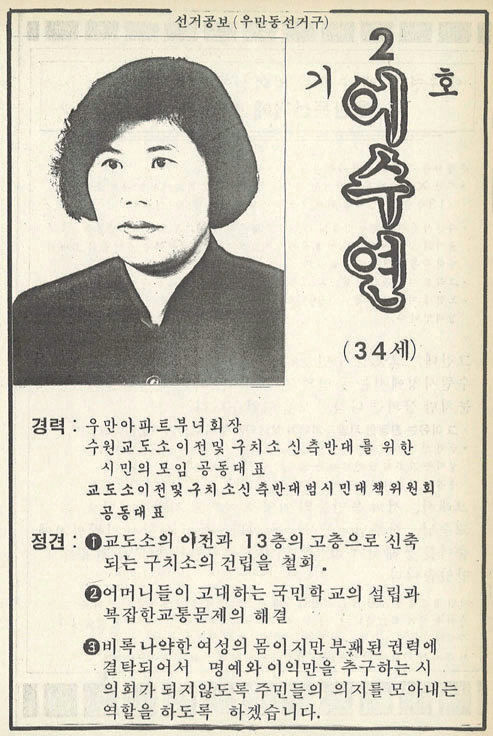
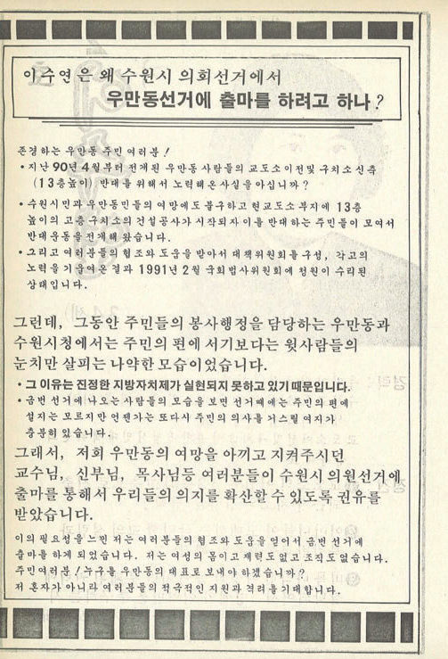

① 지역 유지형
사업으로 자산을 모은 뒤 라이온스클럽, 새마을 조직, 체육단체, 동창회·향우회 등 다양한 관계망을 쌓아 지역 유지로 자리 잡은 경우. 1990년대 시의원 대부분이 이 경로였습니다.

DIGITAL EXHIBITION · 1923 — 2014
누가 수원 시민을 대표해 왔는가. 자산가의 면협의회, 전쟁 뒤의 첫 의회, 30년 만에 돌아온 지방자치, 그리고 의회에 선 여성들까지. 수원시의원 100년의 얼굴을 다섯 개의 장으로 따라갑니다.
CHAPTER 01
아테네 민주정은 지도자를 투표가 아니라 추첨으로 뽑았습니다. 투표는 오히려 공동체에 가장 위험한 인물을 추방할 때 쓰였습니다. 능력 있는 자가 권력이 되면 구성원 사이의 평등이 무너진다고 보았기 때문입니다.
근대의 대의제는 그 반대를 택했습니다. 선거는 공동체에서 ‘더 우월한’ 사람을 골라내는 장치가 되었고, 대표하는 자와 대표되는 자 사이에는 간극이 생겼습니다. 그렇다면 한 도시의 의회에는 어떤 사람들이 대표로 앉아 왔을까요? 이 전시는 수원시의원들의 직업과 학력, 출신과 경력을 통해 그 질문을 따라갑니다.
“태초의 정치는 자치일 수밖에 없다.”— 『수원시의원으로 살다』 120쪽
CHAPTER 02 · 1923 — 1945
1920년 조선총독부는 문화정치를 표방하며 지방자치제를 시행했습니다. 1917년 지정면이 된 수원면에도 면협의회가 설치되었지만, 일정액 이상의 세금을 낸 사람만 투표할 수 있는 제한선거였습니다.
그래서 의원도 자산가였습니다. 지주와 회사 중역, 의사와 금융인이 의석을 채웠습니다. 1929년 선거에서는 17세, 20세의 청년이 당선되기도 했습니다. 근대적 사업에 뛰어든 젊은 자산가들이 새로운 사회세력으로 떠오르고 있었던 것입니다.
1931년 수원면이 수원읍으로 승격되면서 면회는 읍회가 되었고, 1939년에는 14석 가운데 8석을 조선인이 차지했습니다.

CHAPTER 03 · 1952 — 1961
1949년 지방자치법이 공포되었지만 전쟁으로 미뤄졌고, 전쟁이 소강상태에 접어든 1952년에야 첫 수원시의원 선거가 치러졌습니다.

직업란에는 대부분 ‘농업’이 적혔지만 실제로 농사를 짓는 의원은 드물었습니다. 가장 흔한 경력은 동사무소 등 행정기관 근무였고, 해방 공간의 우익 청년단 활동이 뒤를 이었습니다. 전쟁으로 좌파 세력이 사라진 자리에서 하층 관료 출신의 우파 인물들이 수원의 공적 영역을 장악한 것입니다.
초대 의원 최학배의 장남 최종건은 선경직물(훗날 SK)을 일구었고, 제2대 시의원에 당선되어 부자가 잇따라 시의원이 되기도 했습니다.

CHAPTER 04 · 1961 — 1991 —
1960년 선거로 15명의 제3대 의원이 당선되었지만, 곧이어 터진 5·16 군사쿠데타로 지방자치는 전면 중단되었습니다. 기초의회 선거가 다시 치러진 것은 30년 뒤인 1991년입니다.
그 사이 수원은 전혀 다른 도시가 되었습니다. 10만 명이 안 되던 인구는 60만 명을 넘었고, 늘어난 인구의 대부분은 충청·영남·호남 등 전국에서 온 이주민이었습니다. ‘수원 사람만의 수원’이 아니게 된 것입니다.
처음에는 기초의원에 대한 정당 추천이 금지되었습니다. 2010년부터 정당 공천제가 시행되면서 시의원은 독립된 정치인에서 정당의 일원으로 성격이 바뀌었습니다.

사업으로 자산을 모은 뒤 라이온스클럽, 새마을 조직, 체육단체, 동창회·향우회 등 다양한 관계망을 쌓아 지역 유지로 자리 잡은 경우. 1990년대 시의원 대부분이 이 경로였습니다.
재건국민운동, 새마을운동, 여당 조직을 거친 경우가 많았지만, 야당 청년조직과 지구당 활동을 통해 의회에 들어선 이들도 있었습니다.
노동조합, 아파트 입주자 대표회의, 경실련 등 시민단체 활동을 거쳐 진출한 경우. 1990년대 시민사회가 커지면서 늘어난 새로운 경로입니다.
CHAPTER 05 · 1991 —
1960년 제3대 의회까지 여성 의원은 한 명도 없었습니다. 1991년, 우만 아파트 부녀회장 이수연이 수원시의회 첫 여성 의원이 되었습니다.


초창기 여성 의원들은 대개 새마을부녀회 같은 기존 질서를 타고 의회에 들어섰습니다. 제5대 허영순 의원도 새마을부녀회장에서 정치 이력을 시작했습니다. 2000년대 후반부터는 민중운동과 시민운동을 거친 여성 의원들이 등장했습니다.
2000년대 여성 할당제와 2010년 정당 공천제 도입으로 여성 의원은 빠르게 늘었습니다.
제11대 의원 37명 중 여성 14명, 37.8%

“낮은 곳에 있던 모든 이들의 비상이어야 함은 물론이다.”— 황병주·유상희, 「수원시의원들의 사회적 배경」, 『수원시의원으로 살다』 153쪽
자산가의 면협의회에서 관료와 청년단의 의회로, 지역 유지의 의회에서 시민운동가와 여성들의 의회로.
수원시의회는 언제나 그 시대를 닮아 왔습니다.